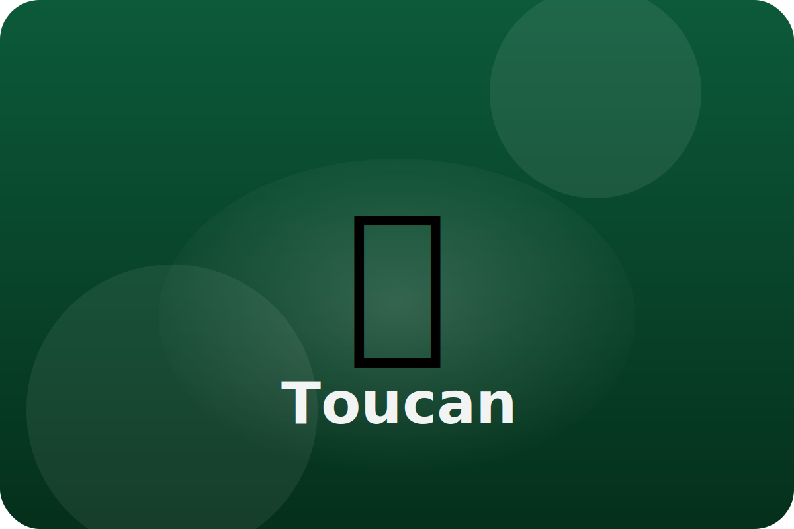

Rainforest
Beaks built for balance
Toucans hop through the canopy eating fruit and insects. Their bright beaks help them grab snacks that other birds cannot reach.
Lightweight Beak
A toucan's huge beak is mostly hollow, so it is light and easy to wave around while plucking fruit.
Built-In Cooler
Blood can rush through the beak to cool the bird down on hot rainforest afternoons.
Fruit Tossing
Toucans toss fruit into the air and catch it. This keeps the food clean and lets them eat without using their short tongues.
Keep exploring the Toucan
Watch the Toucan in action
Toucan Fun Facts For Kids